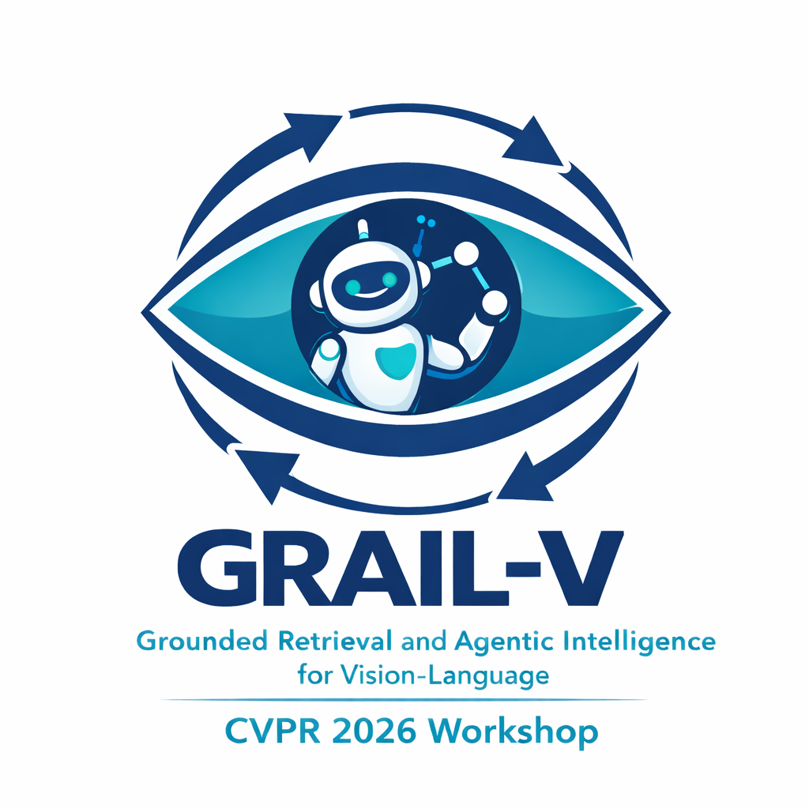

CALIBRA: Calibration-Aware Multi-Agent Verification for Contactless Physiological Monitoring
A calibration-aware multi-agent framework for contactless respiratory rate estimation that treats prediction as an evidence-grounded verification problem rather than a one-shot prompting task.
34.4%
MAE reduction over zero-shot prompting with Gemini-2.5-Flash
31.0%
MAE reduction over zero-shot prompting with GPT-4o
93%
Coverage in routed mode at 4.1 s average latency and 1.6 GB peak memory

Abstract
Contactless physiological monitoring offers a promising path toward low-burden health sensing, but reliable inference from short video segments remains difficult when visual evidence is weak, corrupted by motion, or spectrally ambiguous. We present CALIBRA, a calibration-aware multi-agent framework for contactless respiratory rate (RR) estimation that treats prediction as an evidence-grounded verification problem rather than a one-shot prompting task. CALIBRA operates on a structured artifact bundle with lightweight signal-derived candidate rates, and performs routing, specialized vision-language evidence analysis, critic-based consistency checking, targeted repair, and calibrated arbitration with optional abstention. On our in-house benchmark, CALIBRA consistently outperforms prompting-only baselines across multiple backbones. With Gemini-2.5-Flash, it reduces mean absolute error (MAE) from 5.21 to 3.42, corresponding to a 34.4% reduction over zero-shot prompting and a 16.8% reduction over chain-of-thought prompting. With GPT-4o, it reduces MAE from 5.48 to 3.78, a 31.0% reduction over zero-shot prompting. CALIBRA also improves grounding and consistency in judge-based evaluation, indicating better evidence alignment beyond numerical accuracy alone. Under resource constraints, a routed configuration maintains 93% coverage at 4.1 s average latency and 1.6 GB peak memory. These results show that robust contactless physiological inference depends not only on stronger multimodal backbones, but also on explicit verification of whether predictions are supported by the available evidence.
Why CALIBRA
Prompt-only inference can fail quietly
Difficult segments often contain motion corruption, weak periodicity, or harmonic ambiguity. A model can still output a numerically plausible respiratory rate even when the underlying evidence is inconsistent.
Verification improves decision discipline
CALIBRA reframes estimation as a verification problem: candidate rates are proposed, checked against structured evidence, selectively repaired when conflicts remain unresolved, and only then converted into a final prediction.
Reliability matters in deployment
The framework can abstain when evidence is not coherent enough, improving calibration and safety instead of forcing unreliable predictions.
Method
Each input segment is represented as a four-view artifact bundle with an annotated frame, combined respiratory signal plot, optical-flow summary, and histogram view, together with two deterministic candidate respiratory rates. CALIBRA then performs routing, specialist evidence analysis, critic-based consistency checking, targeted repair, and calibrated arbitration before producing the final estimate.

Overview of CALIBRA’s evidence-grounded verification pipeline.
Results Tables
All benchmark summaries below are rendered as HTML tables rather than figure screenshots, so the results are searchable, selectable, and easier to maintain.
| Attribute | Value |
|---|---|
| Number of recordings | 50 RGB videos |
| Recording duration | 2.5–3.5 min |
| Resolution / frame rate | 1920 × 1080 / 30 fps |
| Breathing conditions | Spontaneous, slow-paced, regular, fast |
| Camera viewpoints | Frontal, oblique, overhead, supine |
| Reference device | Vernier Go Direct Respiration Belt |
| Segment length / label window | 6 s / 30 s (10 s step) |
| Evaluation split | Subject-wise |
| Model / Framework | MAE ↓ | RMSE ↓ | Bias ↓ |
|---|---|---|---|
| CALIBRA (Gemini-2.5-Flash) | 3.42 | 4.88 | 0.29 |
| CALIBRA (GPT-4o) | 3.78 | 5.26 | 0.34 |
| CALIBRA (Qwen3-VL-8B) | 4.35 | 5.92 | 0.41 |
| CALIBRA (DeepSeek-R1-7B) | 4.58 | 6.15 | 0.45 |
| CALIBRA (InternVL3-8B) | 4.71 | 6.28 | 0.47 |
| Model / Framework | RG ↑ | CRA ↑ | CS ↑ | Abst. Prec. ↑ | Abst. Rec. ↑ | EAR ↑ |
|---|---|---|---|---|---|---|
| CALIBRA (Gemini-2.5-Flash) | 0.62 | 0.79 | 0.90 | 0.86 | 0.73 | 0.82 |
| CALIBRA (GPT-4o) | 0.55 | 0.76 | 0.88 | 0.83 | 0.70 | 0.79 |
| CALIBRA (Qwen3-VL-8B) | 0.46 | 0.71 | 0.85 | 0.78 | 0.65 | 0.74 |
| CALIBRA (DeepSeek-R1-7B) | 0.41 | 0.69 | 0.83 | 0.76 | 0.62 | 0.72 |
| CALIBRA (InternVL3-8B) | 0.39 | 0.67 | 0.82 | 0.75 | 0.60 | 0.70 |
| Model / Setting | Grounding ↑ | Consistency ↑ | Rationale ↑ | Confidence ↑ | Plausibility ↑ |
|---|---|---|---|---|---|
| GPT-4.0 (CoT) | 7.6 | 7.4 | 7.3 | 7.0 | 7.5 |
| GPT-4o (CALIBRA) | 8.6 | 8.4 | 8.2 | 8.1 | 8.5 |
| Qwen3-VL-8B (CoT) | 7.1 | 6.9 | 6.8 | 6.7 | 7.0 |
| Qwen3-VL-8B (CALIBRA) | 8.0 | 7.8 | 7.6 | 7.5 | 7.9 |
| Gemini-2.5-Flash (CALIBRA, alt. judge) | 8.9 | 8.7 | 8.5 | 8.6 | 8.8 |
| System / Mode | Avg. Latency ↓ (s) | P95 Latency ↓ (s) | Peak RAM ↓ (GB) | Coverage ↑ (%) |
|---|---|---|---|---|
| Deterministic (FFT+Peak) | 0.03 | 0.05 | 0.35 | 100 |
| Single-agent (CoT) | 2.4 | 5.1 | 1.1 | 98 |
| CALIBRA (Routed mix) | 4.1 | 8.7 | 1.6 | 93 |
| CALIBRA (Strict pass@3) | 7.8 | 15.6 | 1.9 | 91 |
Main Benchmark Plot

Segment-level MAE for prompting baselines and CALIBRA across backbones.
Qualitative Example

A representative challenging segment where CALIBRA resolves the final prediction through routing, evidence verification, and calibrated arbitration.
Difficult segments often contain partially informative but mutually inconsistent cues. A prompt-only model may still return a plausible rate, yet the waveform, histogram, motion summary, and deterministic candidates may not agree. CALIBRA improves decision discipline by forcing agreement checks before commitment.
Ablation
Component ablation
The full system achieves MAE 3.42. Removing the critic increases MAE to 3.94, removing repair increases it to 3.82, disabling routing increases it to 3.66, and disabling abstention increases it to 3.59.

Component ablation of CALIBRA on the best-performing configuration.
Citation
@InProceedings{Sakib_2026_CVPR,
author = {Sakib, Shadman and Shinde, Gaurav and Roy, Nirmalya},
title = {CALIBRA: Calibration-Aware Multi-Agent Verification for Contactless Physiological Monitoring},
booktitle = {Proceedings of the IEEE/CVF Conference on Computer Vision and Pattern Recognition Workshops (CVPRW)},
year = {2026}
}